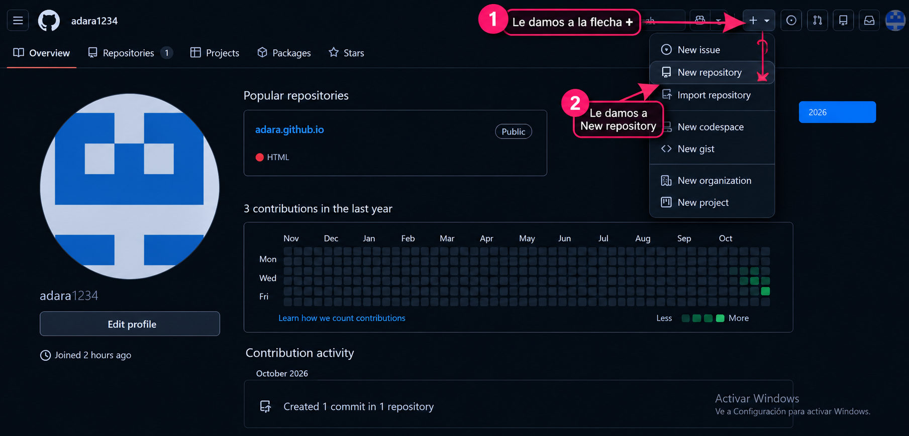
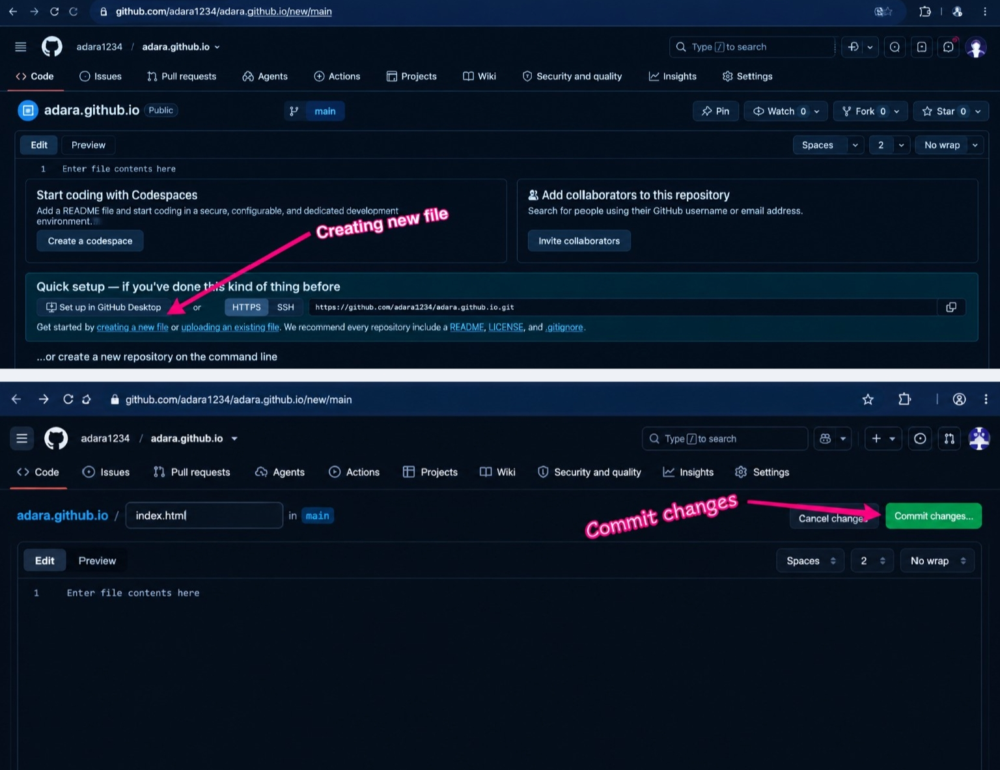
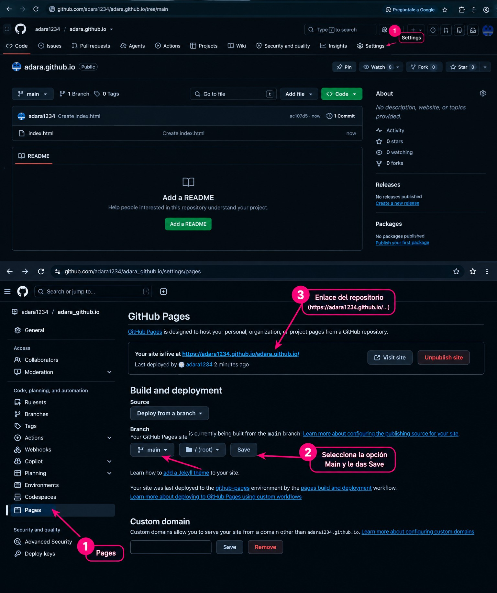

REPÚBLICA BOLIVARIANA DE VENEZUELA
INSTITUTO UNIVERSITARIO DE TECNOLOGÍA
ELECTIVA PROFESIONAL - DESARROLLO WEB
Autor: Christian Martínez
C.I.: 32.858.038
Profesor: Robyir Loreto
Fecha: 29/10/26
El presente manual describe los pasos metodológicos necesarios para desplegar un sitio web estático utilizando la plataforma de alojamiento GitHub Pages de forma segura y directa mediante URL:
Se debe iniciar sesión en GitHub,una vez iniciado la sesión en GitHub se debe crear un nuevo repertorio.Abajo de este paso se le dejara un link directo a GitHub para que comienze a desarrolar su sitio web con los pasos dados que se le mostrara en este Manual.
Plataforma oficial de GitHub
Una vez completado el paso anterior, se visualizará el formulario de creación de un nuevo repositorio, tal como se observa en la siguiente imagen:
En este apartado se deben configurar los siguientes elementos clave:
Una vez creado el repositorio, le daremos a creating new file. Es necesario incorporar el código fuente que estructurará la página web. Para ello, se debe crear un archivo llamado estrictamente index.html en la raíz del repositorio.
Este archivo contendrá las etiquetHTML necesarias y la información del manual, asegurando que el servidor lo reconozca automáticamente como la página de bienvenida principal al cargar la URL.

Para publicar el sitio en la web de forma accesible:
main) y asegúrese de que esté configurada en la ruta raíz (/root), luego haga clic en guardar.https://adara1234.github.io/), la cual podrá compartir para visualizar el sitio web completo.
Como parte de los requerimientos académicos, este sitio web integra la explicación y ejemplos sobre las clases en C# versión 5, centrándose en el control de acceso y el encapsulamiento.
using System;
namespace ManualGitHubCSharp
{
public class Persona
{
// Atributo privado (Encapsulado)
private string cedula;
// Atributo público
public string Nombre;
// Constructor
public Persona(string nombre, string cedula)
{
this.Nombre = nombre;
this.cedula = cedula;
}
// Método público para consultar el dato privado de forma segura
public string ObtenerCedula()
{
return cedula;
}
}
}
La integración de herramientas de despliegue moderno como GitHub Pages combinada con los fundamentos de la programación orientada a objetos en C# permite estructurar documentación técnica clara, accesible y formal bajo normativas estandarizadas.